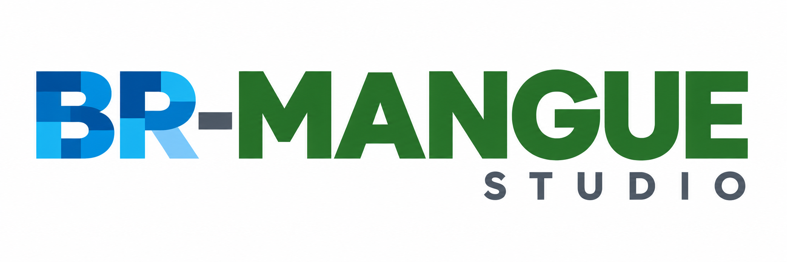

Bring your data
Load aligned categorical land-cover and elevation rasters, with optional soil and study-area layers.
Research software
BR-MANGUE Studio is a desktop application for spatial cellular modelling, scenario exploration, and coastal analysis. Bring your own raster data, define the rules, and see change unfold year by year.
Research beta · Windows 10/11 (64-bit) · Python architecture


The Studio
BR-MANGUE Studio turns aligned land-cover and elevation rasters into an interactive view of mangrove response to sea-level rise. Map your classes, set the scenario, run the simulation, and inspect every annual transition in one place.
Load aligned categorical land-cover and elevation rasters, with optional soil and study-area layers.
Follow annual maps, trajectories, class gains and losses, and transitions while the simulation runs.
Use continuous processing for direct inspection or the memory-efficient block engine for larger rasters.
Get started
Version 1.0.0 is available for Windows 10 and Windows 11, 64-bit. Download the program directly from this site, extract it if necessary, and start BRMANGUE_Studio.exe. macOS and Linux builds are not available yet.
Performance
This measured reference uses the complete CMMA land-cover and ANADEM elevation grid: 78.007 million active cells at 30 m resolution, with one annual transition from 2024 to 2025. Continuous processing is faster on this host; persistent blocks trade speed for a disk-backed workflow on larger grids. Both engines produce the same model results.
Measured on an Intel Core i3-1215U host with 19.7 GiB total RAM, using no annual GeoTIFF writes. This is one reproducible full-CMMA run per engine, not a guaranteed maximum or universal cell limit. The practical capacity depends on raster dimensions, data types, output settings, storage, and other applications. Read the full benchmark note →
Where it began
The first BR-MANGUE version was developed between 2010 and 2014 in Lua, using TerraME and other software dependencies available through the facilities of Brazil’s National Institute for Space Research (INPE), by Dr. Denilson da Silva Bezerra.
Now the project enters a new phase. BR-MANGUE Studio brings the model to Python and an integrated desktop application developed at the Federal University of Maranhão by MSc. Felipe Martins Sousa, in partnership with the author of the first version.
Learn
Start with the Studio guide, then review input requirements and processing-engine notes before running a scenario.
Research and community
Browse studies, active applications, project materials, and news directly in this portal. New entries will be added here as the BR-MANGUE community grows.
Browse the research library →